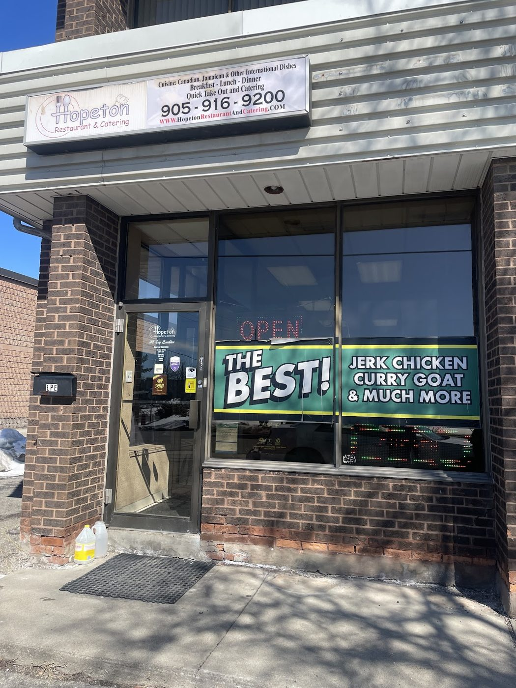

Netherhart Road · Mississauga
Jamaican cooking on Netherhart Road.
Hopeton Restaurant & Catering is at 6315 Netherhart Rd in Mississauga, in the industrial area near Highways 401 and 410. Google lists it as a Jamaican restaurant, with takeout. The shop’s own sign lists breakfast, lunch, dinner, quick takeout and catering, and a window banner names jerk chicken and curry goat.
- Jamaican restaurant
- 4.9 from 282 Google reviews
- Takeout and catering
- Mississauga
What’s cooking
Jerk, curry goat and oxtail
A window banner on the shopfront reads “Jerk Chicken, Curry Goat & Much More.” Reviewers write about jerk chicken, oxtail with rice and peas, fried chicken, pasta salad and beef patties. The restaurant’s Facebook page also names jerk chicken, oxtail and curry goat.
Breakfast, lunch and dinner
The fascia over the door lists breakfast, lunch and dinner, plus “Quick Take Out and Catering.” Google’s listing shows a takeout attribute. The Facebook page says “Walk-in or Call & Place Your Order Today.”
Catering
Catering is in the restaurant’s name and on the shop’s own sign. This page does not list a catering menu or prices; please call to ask.
These details come from the restaurant’s public Google listing and listing photos (read and downloaded Nov 27, 2026), from the shop’s own fascia and window banner in those photos, from its Facebook about text, and from the reviews quoted below. This page does not list prices.
A Jamaican kitchen in Mississauga
The restaurant is at 6315 Netherhart Rd, in Mississauga’s industrial area near Highways 401 and 410. The sign over the door still prints hopetonrestaurantandcatering.com; that domain does not currently resolve, so it is not linked here. You can also find the restaurant on Facebook.
Google’s listing, checked Nov 27, 2026, rates the restaurant 4.9 from 282 reviews and shows takeout. Hours on Menupix do not match Google’s, so it is worth calling ahead.
What customers say
4.9 ★ from 282 Google reviews (checked Nov 27, 2026). Quotes are word for word. Each one says where it was read: on the Google listing itself, or on a public page that copies reviews.
★★★★★
1st time visiting yesterday with my son while we were getting one of our project cars tuned at the BEST in the BUSINESS just down the street : Splitfire Performance.
Back to this restaurant I can say its the best Jamaican food I have ever had even comparing to Jamaican trips in past. The quality of the food is amazing & fresh. We had :
- Jerk chicken
- Rice
- Pasta Salad
- Beef patties⭐️⭐️⭐️⭐️⭐️
Will return keep it up !
★★★★★
Listen. That oxtail was ME-MO-RA-BLE. I was humbled to be served by this senior man who warmly welcomed us. If you’re looking for deliciouuuuus oxtail, don’t look further!! The portions are big, they have a choice of different meals, drinks at a decent price. I’ll surely come back
★★★★★
I came in today for the first time , I was looking for something close to my work and this place was literally 1 min drive from my work. I came in and was greeted by the owner mr. hopeton. all I gotta say is the food is incredible, the owner was super nice, and the service was great. I will be back for sure to get my jerk fix. I ordered the jerk chicken and fried chicken with extra oxtail gravy and it was super dope. i recommend this place to anyone.
★★★★★
Met Hopeton today for the first time — what an incredible experience.
This spot serves up authentic Jamaican cuisine like no other. I had the oxtail with rice and peas and a side of pasta salad. My wife went with the jerk chicken, also with rice and peas and pasta salad.From the moment we walked in, the aroma hit us — rich, savory, like back home. The presentation? On point. The flavor? Yaad man... unreal. Tender meat, seasoned to perfection, cooked with love.
This place is a gem.
Hopeton, respect. We’ll be back soon.
From the kitchen
Real photos from the restaurant’s public Google listing, downloaded Nov 27, 2026. Photos that show a priced menu were left out, and one takeout photo was cropped to remove a menu corner. Tap to enlarge.
Visit Hopeton Restaurant & Catering
6315 Netherhart Rd
Mississauga, ON L5T 1A2
near Highways 401 and 410
| Monday | 7 a.m.–7 p.m. |
|---|---|
| Tuesday | 7 a.m.–7 p.m. |
| Wednesday | 7 a.m.–7 p.m. |
| Thursday | 7 a.m.–7 p.m. |
| Friday | 7 a.m.–7 p.m. |
| Saturday | Closed |
| Sunday | Closed |
These hours are from the restaurant’s Google listing, read Nov 27, 2026: Monday to Friday 7 a.m.–7 p.m., Saturday and Sunday closed. That morning, a Friday, the listing showed “Open · Closes 7 p.m.” Restaurantji and allbiz list the same weekday hours. Menupix lists a different phone and different hours, including a closed Friday, so please call (905) 916-9200 to confirm before you visit.